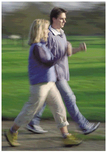

Körperliche Arbeit, gerade auch in den Berufen der Bauwirtschaft, schützt nicht vor einseitiger oder auch unzureichender körperlicher Belastung. Gewichtsabnahme und gleichzeitige Steigerung der körperlichen Leistungsfähigkeit, das lässt sich nur durch ein regelmäßiges Ausdauertraining erreichen.
Wenn Sie bisher nicht sehr aktiv waren, beginnen Sie mit zügigen Spaziergängen. Mit der Zeit sollten Sie es wenigstens auf 30 Minuten körperliche Aktivität, vier- bis fünfmal in der Woche bringen.
Es ist nie zu spät. Auch wenn Sie erst spät damit beginnen - tägliche Bewegung, möglichst an der frischen Luft, lohnt sich immer. Denn Bewegung tut gut! Ihre Leistungsfähigkeit nimmt zu, die Fließeigenschaften des Blutes verbessern sich, Blutdruck, Blutfette und Stresshormone werden gesenkt.
Welche Bewegungsart Sie wählen, hängt ganz von Ihren Vorlieben ab. Empfehlenswert sind Ausdauersportarten wie Wandern, Radfahren, Joggen, Schwimmen, Nordic Walking, Skilanglauf, aber auch Tanzen, Fußfall und Tennis. Bei schlechtem Wetter oder fehlender Sportmöglichkeit tut es auch der Heimtrainer oder das Laufband.
